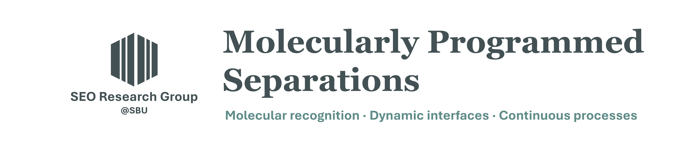
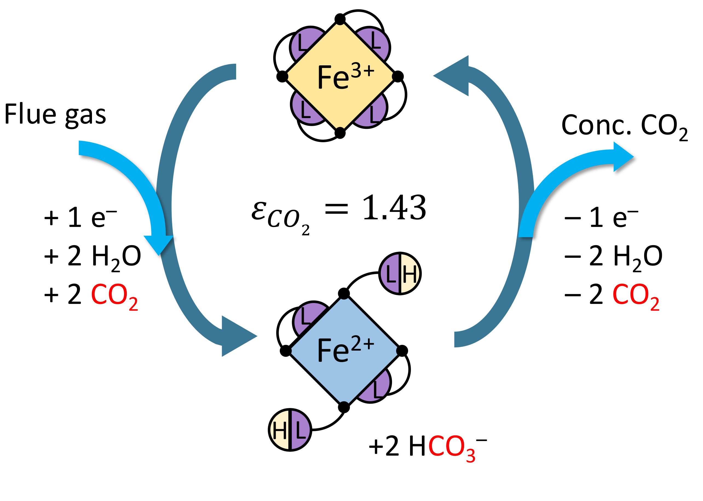

About Us
At the Seo Research Group, we develop molecularly programmed separation systems by connecting molecular recognition, dynamic interfaces, and continuous processes. We investigate how molecular structure, interfacial organization, and nonequilibrium transport govern selective capture, transfer, and release. By translating these relationships across scales, we seek predictive principles for efficient and adaptable separations across complex chemical systems.
How We Program Separations
Separation performance emerges from coupled phenomena across scales. We design molecular interactions, resolve dynamic interfacial behavior, and engineer continuous systems that preserve selectivity under operating conditions.

Molecular Recognition
We design molecular architectures and responsive states that control selective binding, transfer, and release through preorganization, cooperative interactions, and reversible chemistry.
Representative image adapted from our published work on redox-controlled molecular capture. Explore research
Dynamic Interfaces
We determine how solvation, interfacial organization, relaxation, and nonequilibrium transport reshape selectivity during capture, transfer, and release.
Representative image adapted from our published work on pulsed electrochemical operation. Explore research
Continuous Processes
We translate molecular function into immobilized, cyclic, and flow-based systems with controlled residence time, regeneration, and reproducible operation.
Representative image adapted from our published work on continuous photochemical separation. Explore researchRepresentative images are adapted from the group’s published work.
Molecules, Interfaces, and Processes—Studied Together
Our group integrates molecular synthesis, coordination chemistry, electrochemistry, photochemistry, interfacial science, transport measurements, automation, and process engineering. We welcome students and collaborators interested in advancing the science of selective separations.
Meet the Group Contact Us